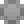
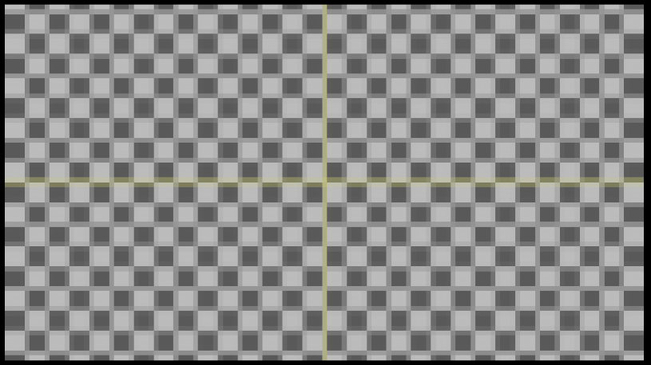
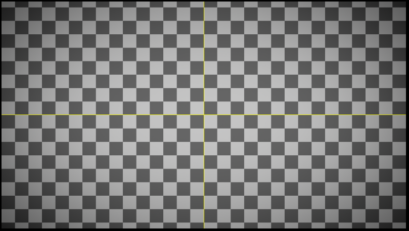
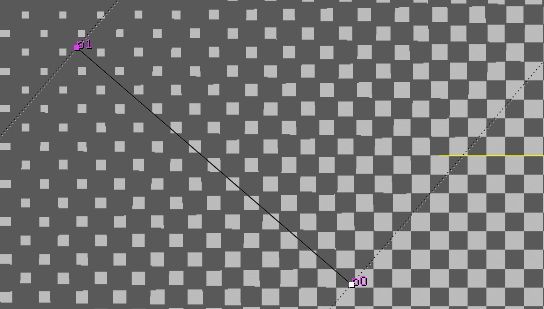

Filter¶

 mosaic¶
马赛克效果
Vignette¶
压暗角

{kind=link}
WeightedErode¶
效果类似Nuke内置的 FilterErode，
但是使用图像作为权重而不是固定的 size 值，所以能够为图上每个位置设置不同的 Erode 强度。
权重图像不支持负数，FilterErode 的负数效果需设置 mode 为 dilate。
| 输入 | 功能 |
|---|---|
| <无名称> | 输入图像 |
| weight | 权重图像。4个通道分别指定上右下左方向的查询距离，小于0的值视为0。 |

| 控制 | 功能 | ||||
|---|---|---|---|---|---|
| mode | 计算模式，默认为收边(取范围内的最小值)，选择此项改为扩边效果(取范围内的最大值) | ||||
| channel | 输入输出通道 | ||||
| multiply | weight图像数值的乘法系数 | ||||
| shape | 扩边形状，默认为矩形，使用圆形时仅使用权重图像的r通道作为圆形半径。 | ||||
| filter | 过滤算法，参见Nuke内置节点 | FilterErode |
的 | filter |
控制。 |
| mix | 计算后的结果和计算前的结果进行混合 |
SoftGlow¶
实现自定义衰减的 glow 效果。
内部使用多个原生 Glow 节点叠加。
| 输入 | 功能 |
|---|---|
| <无名称> | 输入图像 |
| width | 宽度通道输入 |
| 控制 | 功能 |
|---|---|
| size | 辉光尺寸 |
| tint | 辉光染色 |
| tolerance | 辉光阈值，低于此值的像素不影响辉光。 |
| saturation | 辉光饱和度 |
| brightness | 辉光亮度 |
| width channel | 宽度通道，为每个像素单独指定尺寸百分比， 1 代表 100%。 连接 width 输入时从 width 输入取，否则从默认输入取。 |
| level | 辉光级数，越高渲染越慢。最大为 10，为 1 时效果同原生 Glow。 |
| ratio | 下一级辉光相对于上一级辉光的比例, 1 代表 100% |
| operation | 效果的叠加模式 |
| effect only | 是否只输出显示效果，不输出原图。 |
| filter | 辉光模糊算法 |
| mix | 计算后的结果和计算前的结果进行混合 |